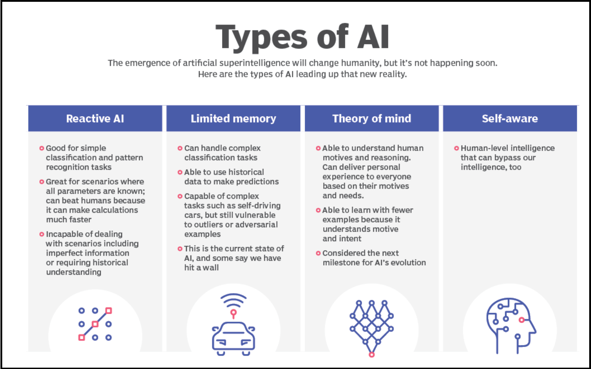

Let's learn about AI issues
Artificial intelligence (AI) is the theory and development of computer systems capable of performing tasks that historically required human intelligence, such as recognizing speech, making decisions, and identifying patterns. AI is an umbrella term that encompasses a wide variety of technologies, including machine learning, deep learning, and natural language processing (NLP).
Although the term is commonly used to describe a range of different technologies in use today, many disagree on whether these actually constitute artificial intelligence. Instead, some argue that much of the technology used in the real world today actually constitutes highly advanced machine learning that is simply a first step towards true artificial intelligence, or “general artificial intelligence” (GAI).
Reactive machines: Reactive machines are the most basic type of artificial intelligence. Machines built in this way don’t possess any knowledge of previous events but instead only “react” to what is before them.
Limited memory machines: Machines with limited memory possess a limited understanding of past events. They can interact more with the world around them than reactive machines can. For example, self-driving cars use a form of limited memory to make turns, observe approaching vehicles, and adjust their speed. However, machines with only limited memory cannot form a complete understanding of the world because their recall of past events is limited and only used in a narrow band of time.
Theory of mind machines: Machines that possess a “theory of mind” represent an early form of artificial general intelligence. In addition to being able to create representations of the world, machines of this type would also have an understanding of other entities that exist within the world.
Self-aware machines: Machines with self-awareness are the theoretically most advanced type of AI and would possess an understanding of the world, others, and itself. This is what most people mean when they talk about achieving AGI. Currently, this is a far-off reality.
AI is a newly emerging form of algorithm that can use its training on data sets to create learning models to perform tasks these tasks can vary from, music reccommendations to text translation.
There are many differing forms of AI, here are some with examples:
ChatGPT: Uses large language models (LLMs) to generate text in response to questions or comments posed to it.
Google Translate: Uses deep learning algorithms to translate text from one language to another.
Netflix: Uses machine learning algorithms to create personalized recommendation engines for users based on their previous viewing history.
Tesla: Uses computer vision to power self-driving features on their cars.
Artificial intelligence is prevalent across many industries. Automating tasks that don't require human intervention saves money and time, and can reduce the risk of human error. Here are a couple of ways AI could be employed in different industries:
Finance industry. Fraud detection is a notable use case for AI in the finance industry. AI's capability to analyze large amounts of data enables it to detect anomalies or patterns that signal fraudulent behavior.
Health care industry. AI-powered robotics could support surgeries close to highly delicate organs or tissue to mitigate blood loss or risk of infection.
Go direct
In May, Microsoft announced a new featured named CoPilot+ Recall, which regularly took screenshots of the user’s desktop, and archived all the data. The feature was to be implemented automatically. The idea behind this it was to create a searchable database of information for a later date, but in practice, many people were squeamish about having their every move recorded – who’d have thought? As part of the backlash, numerous cybersecurity experts came forward and pointed out that having a searchable archive of a person’s every movement, including pages they’ve visited, forms they’ve filled in, and so on, is a treasure trove to a hacker.
X’s chatbot accuses Golden State Warriors Guard Klay Thompson of vandalizing a string of homes in Sacramento. The story was generated after Grok took social media posts that said Thompson was “shooting bricks” (Basketball slang for “missing his shots”) a little bit too literally. “In a bizarre turn of events, NBA star Klay Thompson has been accused of vandalizing multiple houses with bricks in Sacramento,” Grok wrote. “Authorities are investigating the claims after several individuals reported their houses being damaged, with windows shattered by bricks. Klay Thompson has not yet issued a statement regarding the accusations.
These two events alone show two major extremes of what can go worng with AIs, from misinformation and false accusation, to security risks and breaches of personal privacy this is what AI can do if it's not managed correctly and also not given the correct parameters to deal with situations. It is highly important to not forget that these two examples were based on Language models, if this had been the 'Tesla AI' human lives could have been at risk.